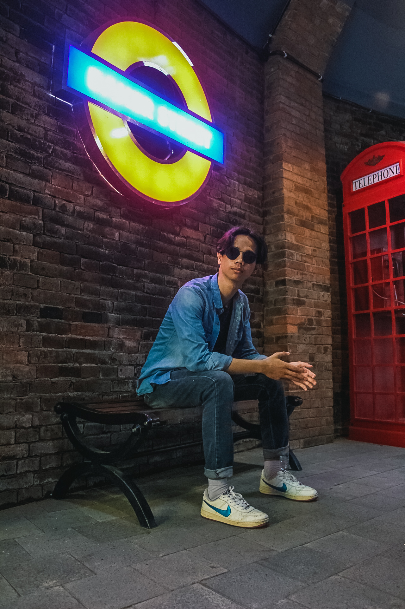

| Nama Lengkap | : | Muhammad Anshori Akbar |  |
| Tempat, Tanggal Lahir | : | Kaliorang, 27 November 2000 | |
| Alamat | : | Jalan Ery Soeparjan | : | anshoriakbar11@gmail.com |
| 2019 - Sekarang | : | Universitas Muhammadiyah Yogyakarta, Fakultas Teknik Jurusan Teknologi Informasi, Yogyakarta |
| 2016 - 2019 | : | SMAN 1 Sangatta Utara |
| 2013 - 2016 | : | Ponpes Nabil Husein & SMPN 3 Kaliorang |
| 2007 - 2013 | : | SDN 005 Kaliorang |
| 2019 - 2020 | : | UKM Photography |
| 2019 - 2020 | : | Pengurus KMTI |
| Python | : | 60% |
| java | : | 50% |
| C Sharp | : | 60% |
![]()